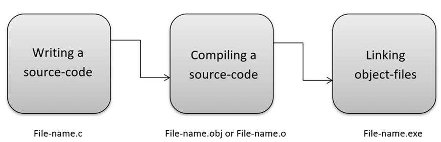

C is a general-purpose programming language that is extremely popular, simple, and flexible to use. It is a
structured programming language that is machine-independent and extensively used to write various
applications, Operating Systems like Windows, and many other complex programs like Oracle database, Git,
Python interpreter, and more.It is said that ‘C’ is a god’s programming language. One can say, C is a base
for the programming. If you know ‘C,’ you can easily grasp the knowledge of the other programming languages
that uses the concept of ‘C’.It is essential to have a background in computer memory mechanisms because it
is an important aspect when dealing with the C programming language.
IEEE-the best 10 top programming language in 2018
History of C language
The base or father of programming languages is ‘ALGOL.’
It was first introduced in 1960. ‘ALGOL’ was used on a large basis in European countries.
‘ALGOL’ introduced the concept of structured programming to the developer community.
In 1967, a new computer programming language was announced called as ‘BCPL’ which stands for Basic Combined
Programming Language.
BCPL was designed and developed by Martin Richards, especially for writing system software.
This was the era of programming languages.
Just after three years, in 1970 a new programming language called ‘B’ was introduced by Ken Thompson that
contained multiple features of ‘BCPL.’
This programming language was created using UNIX operating system at AT&T and Bell Laboratories.
Both the ‘BCPL’ and ‘B’ were system programming languages
In 1972, a great computer scientist Dennis Ritchie created a new programming language called ‘C’ at the Bell
Laboratories.
It was created from ‘ALGOL’, ‘BCPL’ and ‘B’ programming languages.
‘C’ programming language contains all the features of these languages and many more additional concepts that
make it unique from other languages.
‘C’ is a powerful programming language which is strongly associated with the UNIX operating system.
Even most of the UNIX operating system is coded in ‘C’.
Initially ‘C’ programming was limited to the UNIX operating system, but as it started spreading around the
world, it became commercial, and many compilers were released for cross-platform systems.
Today ‘C’ runs under a variety of operating systems and hardware platforms.
As it started evolving many different versions of the language were released.
At times it became difficult for the developers to keep up with the latest version as the systems were
running under the older versions.
To assure that ‘C’ language will remain standard, American National Standards Institute (ANSI) defined a
commercial standard for ‘C’ language in 1989.
Later, it was approved by the International Standards Organization (ISO) in 1990.
‘C’ programming language is also called as ‘ANSI C’.
y
C Basic Commands
Following are the basic commands in C programming language:
C Basic commands
Explanation
#include <stdio.h>
This command includes standard input output header file(stdio.h) from the C library before
compiling a C program
int main()
It is the main function from where C program execution begins.
{
Indicates the beginning of the main function.
/*_some_comments_*/
Whatever written inside this command “/* */” inside a C program, it will not be considered for
compilation and execution.
printf(“Hello_World! “);
This command prints the output on the screen.
getch();
This command is used for any character input from keyboard.
return 0;
This command is used to terminate a C program (main function) and it returns 0.
}
It is used to indicate the end of the main function.
Where is C used? Key Applications
‘C’ language is widely used in embedded systems.
It is used for developing system applications.
It is widely used for developing desktop applications.
Most of the applications by Adobe are developed using ‘C’ programming language.
It is used for developing browsers and their extensions. Google’s Chromium is built using ‘C’
programming language.
It is used to develop databases. MySQL is the most popular database software which is built using ‘C’.
It is used in developing an operating system. Operating systems such as Apple’s OS X, Microsoft’s
Windows, and Symbian are developed using ‘C’ language. It is used for developing desktop as well as
mobile phone’s operating system.
It is used for compiler production.
It is widely used in IOT applications.
How C Programming Language works?
C is a compiled language. A compiler is a special tool that compiles the program and converts it into the
object file which is machine readable. After the compilation process, the linker will combine different
object files and creates a single executable file to run the program. The following diagram shows the
execution of a ‘C’ program

Nowadays, various compilers are available online, and you can use any of those compilers. The
functionality will never differ and most of the compilers will provide the features required to execute
both ‘C’ and ‘C++’ programs.
Following is the list of popular compilers available online:
Clang compiler
MinGW compiler (Minimalist GNU for Windows)
Portable ‘C’ compiler
Turbo C
Summary
‘C’ was developed by Dennis Ritchie in 1972.
It is a robust language.
It is a low programming level language close to machine language
It is widely used in the software development field.
It is a procedure and structure oriented language.
It has the full support of various operating systems and hardware platforms.
Many compilers are available for executing programs written in ‘C’.
A compiler compiles the source file and generates an object file.
A linker links all the object files together and creates one executable file.